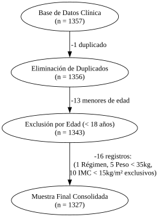
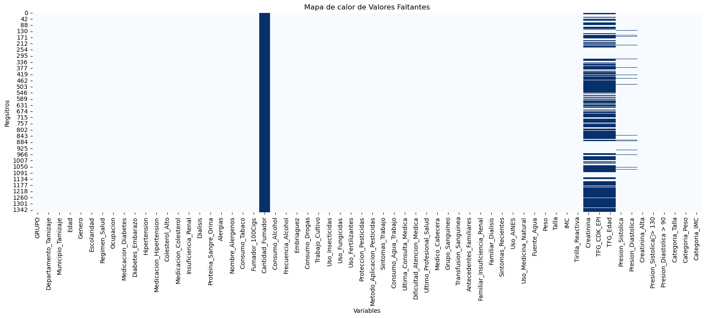
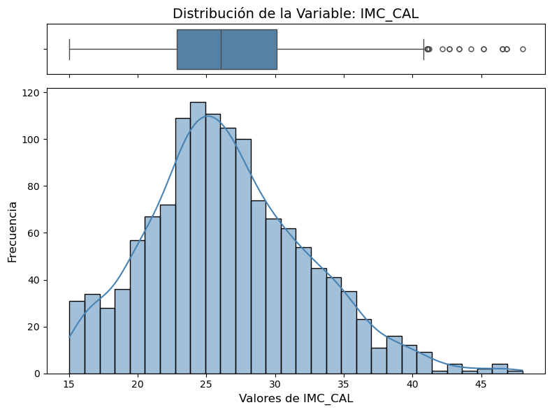
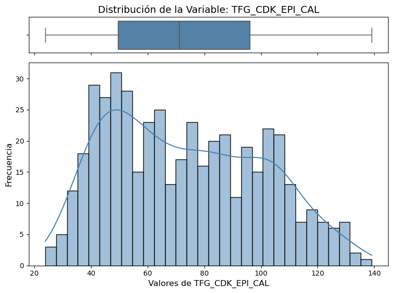

ERC en población afrodescendiente: Datos del manuscrito#
Librerías#
import pandas as pd
import seaborn as sns
import matplotlib.pyplot as plt
import numpy as np
from IPython.display import display, HTML
import math
from scipy.stats import spearmanr, pearsonr
from scipy.stats import chi2_contingency
from scipy.stats import shapiro
from scipy.stats import ks_2samp
import unicodedata
Funciones#
def resumen_var_cat(df):
conteo = df.value_counts(dropna=False)
porcentaje = df.value_counts(normalize=True, dropna=False) * 100
resumen = pd.DataFrame({
'Categorías': conteo.index,
'Conteo': conteo.values,
'Porcentaje': porcentaje.values.round(2)
})
resumen = resumen.head(10)
styled = resumen.style \
.format({'porcentaje': '{:.2f}%'})
display(styled)
def prueba_kolmogrov(df_original,df_imputed,variable1, variable2):
stat, p = ks_2samp(df_original[variable1].dropna(), df_imputed[variable2].dropna())
print(f"KS statistic: {stat:.3f}, p-value: {p:.3f}")
if(p > 0.05):
print("No hay evidencia estadísticamente significativa que evidencia que las distribuciones difieran")
else:
print("La distribución cambió significativamente")
def distribucion_cruzada (df_original, df_imputed, variable):
sns.kdeplot(df_original[variable].dropna(), label='Original')
sns.kdeplot(df_imputed[variable], label='Imputado')
plt.legend()
plt.show()
def analizar_misma_variable(df1, df2, columna, color1="#4682B4", color2="#FF6347"):
f, ((ax_box1, ax_hist1), (ax_box2, ax_hist2)) = plt.subplots(2, 2, sharex='col', figsize=(12, 10))
sns.boxplot(x=df1[columna], ax=ax_box1, color=color1, fliersize=5)
ax_box1.set(xlabel='')
ax_box1.set_title(f'Distribución de la Variable: {columna} en df1', fontsize=14)
sns.histplot(df1[columna], ax=ax_hist1, kde=True, color=color1, bins=30)
ax_hist1.set_xlabel(f'Valores de {columna}', fontsize=12)
ax_hist1.set_ylabel('Frecuencia', fontsize=12)
sns.boxplot(x=df2[columna], ax=ax_box2, color=color2, fliersize=5)
ax_box2.set(xlabel='')
ax_box2.set_title(f'Distribución de la Variable: {columna} en df2', fontsize=14)
sns.histplot(df2[columna], ax=ax_hist2, kde=True, color=color2, bins=30)
ax_hist2.set_xlabel(f'Valores de {columna}', fontsize=12)
ax_hist2.set_ylabel('Frecuencia', fontsize=12)
plt.tight_layout()
plt.show()
def prueba_normalidad_shap (df, variable):
stat, p = shapiro(df[variable].dropna())
print('Estadístico=%.3f, p=%.3f' % (stat, p))
if p > 0.05:
print('No se rechaza H0 → parece normal')
else:
print('Se rechaza H0 → no es normal')
def cramers_v(tabla):
chi2 = chi2_contingency(tabla)[0]
n = tabla.sum().sum()
r, k = tabla.shape
return np.sqrt(chi2 / (n * (min(r - 1, k - 1))))
def matriz_asociacion_categoricas(df, variables, figsize=(12,10), annot=True):
matriz_v = pd.DataFrame(index=variables, columns=variables, dtype=float)
matriz_p = pd.DataFrame(index=variables, columns=variables, dtype=float)
resultados = []
for i, var1 in enumerate(variables):
for j, var2 in enumerate(variables):
if var1 == var2:
matriz_v.loc[var1, var2] = 1.0
matriz_p.loc[var1, var2] = np.nan
else:
tabla = pd.crosstab(df[var1], df[var2])
if tabla.shape[0] < 2 or tabla.shape[1] < 2:
matriz_v.loc[var1, var2] = np.nan
matriz_p.loc[var1, var2] = np.nan
else:
chi2, p, dof, expected = chi2_contingency(tabla)
v = cramers_v(tabla)
matriz_v.loc[var1, var2] = v
matriz_p.loc[var1, var2] = p
if i < j:
resultados.append([var1, var2, v, p])
plt.figure(figsize=figsize)
sns.heatmap(
matriz_v.astype(float),
annot=annot,
cmap="Blues",
fmt=".2f",
linewidths=0.5,
square=True,
cbar_kws={"shrink": 0.8}
)
plt.title("Matriz de Asociación entre Variables Categóricas (V de Cramér)", fontsize=14)
plt.xticks(rotation=45, ha="right")
plt.yticks(rotation=0)
plt.tight_layout()
plt.show()
tabla_asociaciones = pd.DataFrame(resultados, columns=["Variable_1", "Variable_2", "V_Cramer", "p_valor"])
tabla_asociaciones = tabla_asociaciones.sort_values(by="V_Cramer", ascending=False).reset_index(drop=True)
return matriz_v, matriz_p, tabla_asociaciones
import pandas as pd
from scipy.stats import chi2_contingency
def prueba_chi_cuadrado(df, var1, var2):
tabla_contingencia = pd.crosstab(df[var1], df[var2])
chi2, p, dof, expected = chi2_contingency(tabla_contingencia)
tabla_porcentajes = pd.crosstab(df[var1], df[var2], normalize='columns') * 100
tabla_formateada = tabla_contingencia.copy().astype(str)
for col in tabla_contingencia.columns:
tabla_formateada[col] = (
tabla_contingencia[col].astype(str) +
" (" + tabla_porcentajes[col].map("{:.1f}".format) + "%)"
)
print(f"=== PRUEBA CHI-CUADRADO: {var1} vs {var2} ===")
print(f"Estadístico Chi2: {chi2:.4f}")
print(f"p-valor: {p:.4e}")
print(f"Grados de libertad: {dof}")
print("-" * 40)
if p < 0.05:
print("Existe una RELACIÓN significativa entre las variables (p < 0.05).")
else:
print("NO hay evidencia de relación. Las variables son independientes.")
print("\n--- Tabla de Frecuencias Observadas (Porcentaje por Columna) ---")
display(tabla_formateada)
return p
def grafico_dispersion(df, x, y, metodo_corr="spearman", figsize=(8,6)):
data = df[[x, y]].dropna()
if metodo_corr.lower() == "spearman":
corr, p_value = spearmanr(data[x], data[y])
elif metodo_corr.lower() == "pearson":
corr, p_value = pearsonr(data[x], data[y])
else:
raise ValueError("metodo_corr debe ser 'spearman' o 'pearson'")
plt.figure(figsize=figsize)
sns.regplot(
data=data,
x=x,
y=y,
scatter_kws={"alpha": 0.7},
line_kws={"linewidth": 2},
color="#5B8DB8"
)
plt.title(f"Gráfico de Dispersión: {x} vs {y}", fontsize=14)
plt.xlabel(x, fontsize=12)
plt.ylabel(y, fontsize=12)
plt.grid(alpha=0.2)
plt.text(
0.05, 0.95,
f"{metodo_corr.capitalize()} = {corr:.2f}\np = {p_value:.4f}",
transform=plt.gca().transAxes,
fontsize=11,
verticalalignment='top',
bbox=dict(boxstyle="round,pad=0.3", edgecolor="gray", facecolor="white")
)
plt.tight_layout()
plt.show()
return corr, p_value
import pandas as pd
def tabla_frecuencias_comparada(df1, col1, df2, col2, nombre_df1='Categorías originales', nombre_df2='Categorías agrupadas'):
def obtener_estadisticos(df, columna, etiqueta):
abs_freq = df[columna].value_counts(dropna=False)
rel_freq = (df[columna].value_counts(normalize=True, dropna=False) * 100).round(2)
temp_df = pd.DataFrame({
'Categoría': abs_freq.index,
'Frec. Absoluta': abs_freq.values,
'Frec. Relativa (%)': rel_freq.values
})
temp_df['Variable / Origen'] = f"{etiqueta} ({columna})"
return temp_df
stats1 = obtener_estadisticos(df1, col1, nombre_df1)
stats2 = obtener_estadisticos(df2, col2, nombre_df2)
resultado = pd.concat([stats1, stats2], axis=0)
resultado = resultado.set_index(['Variable / Origen', 'Categoría'])
return resultado
def resumen_categorica(df, columna, incluir_na=False, ordenar_por_frecuencia=True, figsize=(8,5)):
freq_abs = df[columna].value_counts(dropna=not incluir_na)
freq_rel = df[columna].value_counts(normalize=True, dropna=not incluir_na) * 100
tabla_freq = pd.DataFrame({
columna: freq_abs.index,
"Frecuencia Absoluta": freq_abs.values,
"Frecuencia Relativa (%)": freq_rel.values.round(2)
})
if ordenar_por_frecuencia:
tabla_freq = tabla_freq.sort_values(by="Frecuencia Absoluta", ascending=False).reset_index(drop=True)
colores = sns.color_palette("Blues", n_colors=len(tabla_freq) + 2)[2:]
plt.figure(figsize=figsize)
ax = sns.barplot(
data=tabla_freq,
x=columna,
y="Frecuencia Absoluta",
palette=colores
)
plt.title(f"Distribución de la Variable: {columna}", fontsize=14)
plt.xlabel(columna, fontsize=12)
plt.ylabel("Frecuencia Absoluta", fontsize=12)
plt.xticks(rotation=45)
for i, row in tabla_freq.iterrows():
ax.text(
i,
row["Frecuencia Absoluta"] + 0.5,
f'{row["Frecuencia Relativa (%)"]:.1f}%',
ha='center',
va='bottom',
fontsize=10
)
plt.tight_layout()
plt.show()
return tabla_freq
def analizar_distribucion(df, columna, color="#4682B4"):
f, (ax_box, ax_hist) = plt.subplots(2, sharex=True,
gridspec_kw={"height_ratios": (.15, .85)},
figsize=(8, 6))
sns.boxplot(x=df[columna], ax=ax_box, color=color, fliersize=5)
ax_box.set(xlabel='')
ax_box.set_title(f'Distribución de la Variable: {columna}', fontsize=14)
sns.histplot(df[columna], ax=ax_hist, kde=True, color=color, bins=30)
ax_hist.set_xlabel(f'Valores de {columna}', fontsize=12)
ax_hist.set_ylabel('Frecuencia', fontsize=12)
plt.tight_layout()
plt.show()
def Resumen_Faltantes(df):
faltantes = df.isnull().sum()
porcentaje = (faltantes / len(df)) * 100
tabla_faltantes = pd.DataFrame({
'Valores faltantes': faltantes,
'Porcentaje (%)': porcentaje
})
tabla_faltantes = tabla_faltantes[tabla_faltantes['Valores faltantes'] > 0]
tabla_faltantes.sort_values('Porcentaje (%)', ascending=False)
return tabla_faltantes
def comparar_categoricas(df, col1, col2, incluir_na=False, ordenar_por_frecuencia=True, figsize=(12, 6)):
def tabla_frecuencia(df, columna):
counts = df[columna].value_counts(dropna=not incluir_na)
total = len(df[columna]) if incluir_na else df[columna].count()
tabla = pd.DataFrame({
columna: counts.index,
"Frecuencia Absoluta": counts.values,
"Frecuencia Relativa (%)": (counts.values / total * 100).round(2)
})
if ordenar_por_frecuencia:
tabla = tabla.sort_values(by="Frecuencia Absoluta", ascending=False).reset_index(drop=True)
return tabla
tabla1 = tabla_frecuencia(df, col1)
tabla2 = tabla_frecuencia(df, col2)
fig, axes = plt.subplots(1, 2, figsize=figsize)
sns.barplot(data=tabla1, x=col1, y="Frecuencia Absoluta", color="#5B8DB8", ax=axes[0])
axes[0].set_title(f"Distribución de {col1}")
axes[0].tick_params(axis='x', rotation=45)
for i, row in tabla1.iterrows():
axes[0].text(i, row["Frecuencia Absoluta"] + 0.5, f'{row["Frecuencia Relativa (%)"]}%',
ha='center', va='bottom', fontsize=9)
sns.barplot(data=tabla2, x=col2, y="Frecuencia Absoluta", color="#89A8C9", ax=axes[1])
axes[1].set_title(f"Distribución de {col2}")
axes[1].tick_params(axis='x', rotation=45)
for i, row in tabla2.iterrows():
axes[1].text(i, row["Frecuencia Absoluta"] + 0.5, f'{row["Frecuencia Relativa (%)"]}%',
ha='center', va='bottom', fontsize=9)
plt.tight_layout()
plt.show()
html_t1 = tabla1.to_html(index=False)
html_t2 = tabla2.to_html(index=False)
display(HTML(f"""
<div style="display: flex; justify-content: flex-start; gap: 40px; padding-left: 5%; width: 100%;">
<div style="min-width: 300px; max-width: 45%;">{html_t1}</div>
<div style="min-width: 300px; max-width: 45%;">{html_t2}</div>
</div>
<style>
.dataframe {{
border-collapse: collapse;
border: none;
width: 100%;
}}
.dataframe th {{
background-color: #f2f2f2;
text-align: left;
padding: 8px;
}}
.dataframe td {{
padding: 8px;
border-bottom: 1px solid #ddd;
}}
</style>
"""))
def matriz_barras_categoricas(df, columnas, incluir_na=False, ncols=3, figsize_por_grafico=(6, 4)):
tablas_frecuencia = {}
n = len(columnas)
nrows = math.ceil(n / ncols)
fig, axes = plt.subplots(
nrows=nrows,
ncols=ncols,
figsize=(figsize_por_grafico[0] * ncols, figsize_por_grafico[1] * nrows)
)
axes = axes.flatten() if n > 1 else [axes]
for i, col in enumerate(columnas):
ax = axes[i]
freq_abs = df[col].value_counts(dropna=not incluir_na)
freq_rel = df[col].value_counts(normalize=True, dropna=not incluir_na) * 100
tabla = pd.DataFrame({
col: freq_abs.index.astype(str),
"Frecuencia Absoluta": freq_abs.values,
"Frecuencia Relativa (%)": freq_rel.values.round(2)
})
tablas_frecuencia[col] = tabla
colores = sns.color_palette("Blues", n_colors=len(tabla) + 2)[2:]
sns.barplot(
data=tabla,
x=col,
y="Frecuencia Absoluta",
palette=colores,
ax=ax
)
ax.set_title(col, fontsize=12)
ax.set_xlabel("")
ax.set_ylabel("Frecuencia")
ax.tick_params(axis='x', rotation=45)
for j, row in tabla.iterrows():
ax.text(
j,
row["Frecuencia Absoluta"] + max(tabla["Frecuencia Absoluta"]) * 0.01,
f'{row["Frecuencia Relativa (%)"]:.1f}%',
ha='center',
va='bottom',
fontsize=9
)
for j in range(i + 1, len(axes)):
fig.delaxes(axes[j])
plt.tight_layout()
plt.show()
return tablas_frecuencia
def imputacion_por_mediana(df, columna):
mediana = df[columna].median()
df[columna].fillna(mediana, inplace=True)
return df
def analizar_comparativa(df1, df2, col1, col2, color1="#4682B4", color2="#FF6347"):
f, axes = plt.subplots(2, 2, figsize=(12, 10))
sns.boxplot(x=df1[col1], ax=axes[0, 0], color=color1, fliersize=5)
axes[0, 0].set_title(f'Boxplot: {col1} (DF1)', fontsize=12)
sns.histplot(df1[col1], ax=axes[0, 1], kde=True, color=color1, bins=30)
axes[0, 1].set_title(f'Histograma: {col1} (DF1)', fontsize=12)
sns.boxplot(x=df2[col2], ax=axes[1, 0], color=color2, fliersize=5)
axes[1, 0].set_title(f'Boxplot: {col2} (DF2)', fontsize=12)
sns.histplot(df2[col2], ax=axes[1, 1], kde=True, color=color2, bins=30)
axes[1, 1].set_title(f'Histograma: {col2} (DF2)', fontsize=12)
plt.tight_layout()
plt.show()
Data Sources#
df = pd.read_excel("df_afro_clean.xlsx")
df.info()
<class 'pandas.core.frame.DataFrame'>
RangeIndex: 1357 entries, 0 to 1356
Data columns (total 62 columns):
# Column Non-Null Count Dtype
--- ------ -------------- -----
0 GRUPO 1357 non-null object
1 Departamento_Tamizaje 1357 non-null object
2 Municipio_Tamizaje 1357 non-null object
3 Edad 1357 non-null int64
4 Genero 1357 non-null object
5 Escolaridad 1357 non-null object
6 Regimen_Salud 1357 non-null object
7 Ocupacion 1357 non-null object
8 Medicacion_Diabetes 1357 non-null object
9 Diabetes_Embarazo 1357 non-null object
10 Hipertension 1357 non-null object
11 Medicacion_Hipertension 1357 non-null object
12 Colesterol_Alto 1357 non-null object
13 Medicacion_Colesterol 1357 non-null object
14 Insuficiencia_Renal 1357 non-null object
15 Dialisis 1357 non-null object
16 Proteina_Sangre_Orina 1357 non-null object
17 Alergias 1357 non-null object
18 Nombre_Alergenos 1357 non-null object
19 Consumo_Tabaco 1357 non-null object
20 Fumador_100Cigs 1357 non-null object
21 Cantidad_Fumador 0 non-null float64
22 Consumo_Alcohol 1357 non-null object
23 Frecuencia_Alcohol 1357 non-null object
24 Embriaguez 1357 non-null object
25 Consumo_Drogas 1357 non-null object
26 Trabajo_Cultivo 1357 non-null object
27 Uso_Insecticidas 1357 non-null object
28 Uso_Fungicidas 1357 non-null object
29 Uso_Fertilizantes 1357 non-null object
30 Proteccion_Pesticidas 1357 non-null object
31 Metodo_Aplicacion_Pesticidas 1357 non-null object
32 Sintomas_Trabajo 1357 non-null object
33 Consumo_Agua_Trabajo 1357 non-null object
34 Ultima_Consulta_Medica 1357 non-null object
35 Dificultad_Atencion_Medica 1357 non-null object
36 Ultimo_Profesional_Salud 1357 non-null object
37 Medico_Cabecera 1357 non-null object
38 Grupo_Sanguineo 1357 non-null object
39 Transfusion_Sanguinea 1357 non-null object
40 Antecedentes_Familiares 1357 non-null object
41 Familiar_Insuficiencia_Renal 1357 non-null object
42 Familiar_Dialisis 1357 non-null object
43 Sintomas_Recientes 1357 non-null object
44 Uso_AINES 1357 non-null object
45 Uso_Medicina_Natural 1357 non-null object
46 Fuente_Agua 1357 non-null object
47 Peso 1357 non-null int64
48 Talla 1357 non-null float64
49 IMC 1357 non-null float64
50 Tirilla_Reactiva 1357 non-null object
51 Creatinina 470 non-null float64
52 TFG_CDK_EPI 470 non-null float64
53 TFG_Edad 470 non-null float64
54 Presion_Sistolica 1310 non-null float64
55 Presion_Diastolica 1310 non-null float64
56 Creatinina_Alta 1357 non-null object
57 Presion_Sistolica > 130 1357 non-null int64
58 Presion_Diastolica > 90 1357 non-null int64
59 Categoria_Talla 1357 non-null object
60 Categoria_Peso 1357 non-null object
61 Categoria_IMC 1357 non-null object
dtypes: float64(8), int64(4), object(50)
memory usage: 657.4+ KB
La base de datos consta de 1357 registros y 62 variables.
La doctora inicia el artículo con una base de datos que incluye a 1590 individuos. Esta cantidad coincide con los registros de la base de datos del cuestionario_1, una base de datos dada anteriormente por la clínica, pero la base de datos fue actualizada debido a que contaba con 258 registros duplicados. Además, no sería correcto afirmar que se cuentan con esa cantidad de individuos sin haber verificado anteriormente los registros duplicados, por lo que los datos mencionados podrían ser erróneos.
df["Presion_Sistolica > 130"] = df["Presion_Sistolica > 130"].astype("object")
df["Presion_Diastolica > 90"] = df["Presion_Diastolica > 90"].astype("object")
Verificación de registros duplicados:#
print("En este dataset podemos encontrar {} resgistros duplicados".format(df.duplicated().sum()))
En este dataset podemos encontrar 1 resgistros duplicados
df[df.duplicated(keep = False)]
| GRUPO | Departamento_Tamizaje | Municipio_Tamizaje | Edad | Genero | Escolaridad | Regimen_Salud | Ocupacion | Medicacion_Diabetes | Diabetes_Embarazo | ... | TFG_CDK_EPI | TFG_Edad | Presion_Sistolica | Presion_Diastolica | Creatinina_Alta | Presion_Sistolica\t> 130 | Presion_Diastolica > 90 | Categoria_Talla | Categoria_Peso | Categoria_IMC | |
|---|---|---|---|---|---|---|---|---|---|---|---|---|---|---|---|---|---|---|---|---|---|
| 407 | AFRODESCENDIENTE | ATLANTICO | BARRANQUILLA | 41 | Femenino | Técnica | No tiene | Desempleado | No | No | ... | NaN | NaN | 110.0 | 60.0 | No | 0 | 0 | >1.70 | >80 | Alto |
| 1023 | AFRODESCENDIENTE | ATLANTICO | BARRANQUILLA | 41 | Femenino | Técnica | No tiene | Desempleado | No | No | ... | NaN | NaN | 110.0 | 60.0 | No | 0 | 0 | >1.70 | >80 | Alto |
2 rows × 62 columns
Ante la presencia de un registro duplicado, se conserva el que aparece en primer lugar y se elimina aquel que se encuentra en una posición posterior, bajo el supuesto de que el primer registro corresponde a la captura original y los siguientes podrían derivarse de errores de digitación, reprocesamiento o redundancias en la recolección de la información.
df= df.drop_duplicates(keep='first')
print("Dentro del dataset aun quedan {} registros duplicados".format(df.duplicated().sum()))
Dentro del dataset aun quedan 0 registros duplicados
df[df.duplicated(keep=False)]
| GRUPO | Departamento_Tamizaje | Municipio_Tamizaje | Edad | Genero | Escolaridad | Regimen_Salud | Ocupacion | Medicacion_Diabetes | Diabetes_Embarazo | ... | TFG_CDK_EPI | TFG_Edad | Presion_Sistolica | Presion_Diastolica | Creatinina_Alta | Presion_Sistolica\t> 130 | Presion_Diastolica > 90 | Categoria_Talla | Categoria_Peso | Categoria_IMC |
|---|
0 rows × 62 columns
Finalmente, la base de datos contaría con 1356 individuos.
Verificación de lugares de tamizajes#
Departamentos
df['Departamento_Tamizaje'].unique()
array(['BOLIVAR', 'ATLANTICO', 'PALENQUE'], dtype=object)
df["Departamento_Tamizaje"] = df["Departamento_Tamizaje"].replace({
"PALENQUE":"BOLIVAR"
})
df['Departamento_Tamizaje'].unique()
array(['BOLIVAR', 'ATLANTICO'], dtype=object)
Municipios
df['Municipio_Tamizaje'].unique()
array(['MARIA LA BAJA', 'BARRANQUILLA', 'PALENQUE', 'LOMITA ARENA',
'PONTEZUELA', 'SAN JOSE DE SACO'], dtype=object)
En el artículo, la doctora menciona:
Rural communities included San Basilio de Palenque (Bolívar), San José de Saco and Lomita Arena (Atlántico), and María la Baja (Bolívar). Urban sampling included Afro-descendant neighborhoods in Cartagena (Bolívar), Barranquilla (Atlántico), Maicao (La Guajira), and Magdalena. In Cartagena, areas such as Cerro de la Popa have long been inhabited by Afro-descendant populations who, despite conditions of socioeconomic marginalization, have preserved cultural traditions. Similarly, in Barranquilla, neighborhoods such as Nueva Colombia and El Valle in the southwestern part of the city represent important sites of cultural resilience and identity.
Las ciudades/municipios resaltados no se encuentran en la base de datos.
# Esto crea una serie donde el índice es el Departamento
relacion = df.groupby('Departamento_Tamizaje')['Municipio_Tamizaje'].unique()
# Para verlo de forma estética en una tabla
for depto, municipios in relacion.items():
print(f"** {depto} **")
print(f"{', '.join(municipios)}\n")
** ATLANTICO **
BARRANQUILLA, SAN JOSE DE SACO
** BOLIVAR **
MARIA LA BAJA, PALENQUE, LOMITA ARENA, PONTEZUELA
Individuos mayores a 18 años
print(f"El valor de la muestra hasta ahora {len(df)}")
print(f"El número de personas menores de 18 años es {len(df[df['Edad']<18])}")
df = df[df['Edad']>=18]
print(f"la muestra excluyendo a los menores de 18 años quedo con {len(df)} registros")
El valor de la muestra hasta ahora 1356
El número de personas menores de 18 años es 13
la muestra excluyendo a los menores de 18 años quedo con 1343 registros
Después de filtrar los datos según el criterio de exclusión: individuos de 18 años o mayores, resultan 1343 individuos.
Observación con información pérdida en la varible ‘Regimen_Salud’
df['Regimen_Salud'].unique()
array(['Subsidiado', 'No tiene', 'Contributivo', 'Especial', 'N.d.'],
dtype=object)
Se supone que la observación excluida es la que tiene la categoría “N.d.”.
df[df["Regimen_Salud"]=="N.d."]
| GRUPO | Departamento_Tamizaje | Municipio_Tamizaje | Edad | Genero | Escolaridad | Regimen_Salud | Ocupacion | Medicacion_Diabetes | Diabetes_Embarazo | ... | TFG_CDK_EPI | TFG_Edad | Presion_Sistolica | Presion_Diastolica | Creatinina_Alta | Presion_Sistolica\t> 130 | Presion_Diastolica > 90 | Categoria_Talla | Categoria_Peso | Categoria_IMC | |
|---|---|---|---|---|---|---|---|---|---|---|---|---|---|---|---|---|---|---|---|---|---|
| 1233 | AFRODESCENDIENTE | BOLIVAR | PALENQUE | 58 | Femenino | No escolarizado | N.d. | Desempleado | No | No | ... | NaN | NaN | 120.0 | 87.0 | No | 0 | 0 | 1.61-1.70 | 41-60 | Normal |
1 rows × 62 columns
Observaciones con valores anómalos en la variable ‘Peso’
df[df['Peso']<35]
| GRUPO | Departamento_Tamizaje | Municipio_Tamizaje | Edad | Genero | Escolaridad | Regimen_Salud | Ocupacion | Medicacion_Diabetes | Diabetes_Embarazo | ... | TFG_CDK_EPI | TFG_Edad | Presion_Sistolica | Presion_Diastolica | Creatinina_Alta | Presion_Sistolica\t> 130 | Presion_Diastolica > 90 | Categoria_Talla | Categoria_Peso | Categoria_IMC | |
|---|---|---|---|---|---|---|---|---|---|---|---|---|---|---|---|---|---|---|---|---|---|
| 50 | AFRODESCENDIENTE | ATLANTICO | BARRANQUILLA | 70 | Femenino | Primaria | Subsidiado | Desempleado | No | No | ... | NaN | NaN | 149.0 | 79.0 | No | 1 | 0 | 1.61-1.70 | <40 | Bajo |
| 51 | AFRODESCENDIENTE | ATLANTICO | BARRANQUILLA | 61 | Femenino | No escolarizado | Subsidiado | Agricultor | Si | No | ... | NaN | NaN | 159.0 | 90.0 | No | 1 | 0 | 1.61-1.70 | <40 | Bajo |
| 91 | AFRODESCENDIENTE | ATLANTICO | BARRANQUILLA | 50 | Femenino | Técnica | Subsidiado | Desempleado | No | No | ... | 117.09 | 80.0 | 117.0 | 82.0 | No | 0 | 0 | 1.50-1.60 | <40 | Bajo |
| 769 | AFRODESCENDIENTE | ATLANTICO | BARRANQUILLA | 70 | Femenino | Primaria | Subsidiado | Desempleado | No | No | ... | NaN | NaN | 149.0 | 79.0 | No | 1 | 0 | 1.61-1.70 | <40 | Bajo |
| 795 | AFRODESCENDIENTE | ATLANTICO | BARRANQUILLA | 50 | Femenino | Técnica | Subsidiado | Desempleado | No | No | ... | NaN | NaN | 117.0 | 82.0 | No | 0 | 0 | 1.50-1.60 | <40 | Bajo |
5 rows × 62 columns
Efectivamente, si existen 5 registros que corresponden a esta anomalías.
Observaciones con valores anómalos de IMC
df[df['IMC']<15]
| GRUPO | Departamento_Tamizaje | Municipio_Tamizaje | Edad | Genero | Escolaridad | Regimen_Salud | Ocupacion | Medicacion_Diabetes | Diabetes_Embarazo | ... | TFG_CDK_EPI | TFG_Edad | Presion_Sistolica | Presion_Diastolica | Creatinina_Alta | Presion_Sistolica\t> 130 | Presion_Diastolica > 90 | Categoria_Talla | Categoria_Peso | Categoria_IMC | |
|---|---|---|---|---|---|---|---|---|---|---|---|---|---|---|---|---|---|---|---|---|---|
| 50 | AFRODESCENDIENTE | ATLANTICO | BARRANQUILLA | 70 | Femenino | Primaria | Subsidiado | Desempleado | No | No | ... | NaN | NaN | 149.0 | 79.0 | No | 1 | 0 | 1.61-1.70 | <40 | Bajo |
| 51 | AFRODESCENDIENTE | ATLANTICO | BARRANQUILLA | 61 | Femenino | No escolarizado | Subsidiado | Agricultor | Si | No | ... | NaN | NaN | 159.0 | 90.0 | No | 1 | 0 | 1.61-1.70 | <40 | Bajo |
| 55 | AFRODESCENDIENTE | ATLANTICO | BARRANQUILLA | 72 | Femenino | Primaria | Subsidiado | Desempleado | No | No | ... | NaN | NaN | 172.0 | 84.0 | No | 1 | 0 | >1.70 | <40 | Bajo |
| 69 | AFRODESCENDIENTE | BOLIVAR | PALENQUE | 56 | Femenino | Universitaria | Contributivo | Otro | No | No | ... | NaN | NaN | 119.0 | 93.0 | No | 0 | 1 | >1.70 | 41-60 | Bajo |
| 83 | AFRODESCENDIENTE | ATLANTICO | BARRANQUILLA | 35 | Femenino | Posgrado | No tiene | Comerciante | No | No | ... | NaN | NaN | 117.0 | 80.0 | No | 0 | 0 | >1.70 | 41-60 | Bajo |
| 91 | AFRODESCENDIENTE | ATLANTICO | BARRANQUILLA | 50 | Femenino | Técnica | Subsidiado | Desempleado | No | No | ... | 117.09 | 80.0 | 117.0 | 82.0 | No | 0 | 0 | 1.50-1.60 | <40 | Bajo |
| 214 | AFRODESCENDIENTE | BOLIVAR | LOMITA ARENA | 47 | Femenino | Secundaria | Subsidiado | Desempleado | No | No aplica | ... | NaN | NaN | 120.0 | 70.0 | No | 0 | 0 | >1.70 | 41-60 | Bajo |
| 378 | AFRODESCENDIENTE | ATLANTICO | BARRANQUILLA | 61 | Femenino | Bachiller | Especial | Desempleado | No | No | ... | NaN | NaN | 120.0 | 80.0 | No | 0 | 0 | >1.70 | 41-60 | Bajo |
| 434 | AFRODESCENDIENTE | ATLANTICO | BARRANQUILLA | 24 | Femenino | Universitaria | Subsidiado | Otro | No | No | ... | NaN | NaN | 114.0 | 75.0 | No | 0 | 0 | 1.61-1.70 | <40 | Bajo |
| 531 | AFRODESCENDIENTE | ATLANTICO | SAN JOSE DE SACO | 88 | Femenino | No escolarizado | Subsidiado | Desempleado | No | No | ... | NaN | NaN | 130.0 | 70.0 | No | 0 | 0 | 1.61-1.70 | <40 | Bajo |
| 769 | AFRODESCENDIENTE | ATLANTICO | BARRANQUILLA | 70 | Femenino | Primaria | Subsidiado | Desempleado | No | No | ... | NaN | NaN | 149.0 | 79.0 | No | 1 | 0 | 1.61-1.70 | <40 | Bajo |
| 782 | AFRODESCENDIENTE | ATLANTICO | BARRANQUILLA | 56 | Femenino | Universitaria | Contributivo | Otro | No | No | ... | NaN | NaN | 119.0 | 93.0 | No | 0 | 1 | >1.70 | 41-60 | Bajo |
| 788 | AFRODESCENDIENTE | ATLANTICO | BARRANQUILLA | 35 | Femenino | Posgrado | No tiene | Comerciante | No | No | ... | NaN | NaN | 117.0 | 80.0 | No | 0 | 0 | >1.70 | 41-60 | Bajo |
| 795 | AFRODESCENDIENTE | ATLANTICO | BARRANQUILLA | 50 | Femenino | Técnica | Subsidiado | Desempleado | No | No | ... | NaN | NaN | 117.0 | 82.0 | No | 0 | 0 | 1.50-1.60 | <40 | Bajo |
| 1040 | AFRODESCENDIENTE | ATLANTICO | BARRANQUILLA | 24 | Femenino | Universitaria | Subsidiado | Otro | No | No | ... | NaN | NaN | 114.0 | 75.0 | No | 0 | 0 | 1.61-1.70 | <40 | Bajo |
15 rows × 62 columns
IMC_BAJO = df[df['IMC']<15]
len(IMC_BAJO)
15
Note que existen 15 registros con esta anomalía, sin haber eliminado las anomalías anteriores.
df.loc[(df["Peso"]<35)&(df["IMC"]<15),["Peso","IMC","Talla"]]
| Peso | IMC | Talla | |
|---|---|---|---|
| 50 | 31 | 11.959415 | 1.61 |
| 51 | 24 | 9.144947 | 1.62 |
| 91 | 31 | 12.576575 | 1.57 |
| 769 | 31 | 11.959415 | 1.61 |
| 795 | 31 | 12.576575 | 1.57 |
Note que los 5 registros que cumplen con el peso \(< 35kg\) tambien cumplen con la anomalia de tener un IMC \(<15kg/m^2\)
df.loc[(df["Peso"]>=35)&(df["IMC"]<15),["Peso","IMC","Talla"]]
| Peso | IMC | Talla | |
|---|---|---|---|
| 55 | 35 | 10.923504 | 1.79 |
| 69 | 42 | 12.962963 | 1.80 |
| 83 | 46 | 14.682882 | 1.77 |
| 214 | 45 | 14.202752 | 1.78 |
| 378 | 45 | 14.363689 | 1.77 |
| 434 | 40 | 14.172336 | 1.68 |
| 531 | 40 | 14.342572 | 1.67 |
| 782 | 42 | 12.962963 | 1.80 |
| 788 | 46 | 14.682882 | 1.77 |
| 1040 | 40 | 14.172336 | 1.68 |
Esto nos deja con 10 individuos que cumplen exclusivamente con el criterio de un IMC < 15 \(kg/m^2\), debido a que presentan un peso significativamente bajo en relación con su estatura.
df = df[df['Regimen_Salud']!='N.d.']
df=df[((df['Peso']>=35)&(df["IMC"]>=15))&(df["IMC"]>15)]
len(df)
1327
En total, se procedio a eliminar 16 registros unicos consolidando una muestra de 1327 individuos.
Diagrama de Flujo Limpieza de Datos#
import graphviz
dot = graphviz.Digraph(comment='Flujo de Limpieza de Datos')
dot.attr(rankdir='TB', size='8,5')
dot.node('A', 'Base de Datos Clínica\n(n = 1357)')
dot.node('B', 'Eliminación de Duplicados\n(n = 1356)')
dot.node('C', 'Exclusión por Edad (< 18 años)\n(n = 1343)')
dot.node('D', 'Muestra Final Consolidada\n(n = 1327)')
dot.edge('A', 'B', label=' -1 duplicado')
dot.edge('B', 'C', label=' -13 menores de edad')
dot.edge('C', 'D', label='-16 registros:\n(1 Régimen, 5 Peso < 35kg,\n10 IMC < 15kg/m² exclusivos)')
dot.render('flujo_limpieza', format='png', cleanup=True)
dot

Manipulación de la base de datos según recomendaciones:#
Valores faltantes
plt.figure(figsize = (20,6))
sns.heatmap(df.isnull(),cbar=False,cmap= "Blues")
plt.title("Mapa de calor de Valores Faltantes")
plt.xlabel("Variables")
plt.ylabel("Regsitros")
plt.show()
C:\Users\Mari\miniconda3\envs\deepl_venv\lib\site-packages\seaborn\utils.py:61: UserWarning: Glyph 9 ( ) missing from font(s) DejaVu Sans.
fig.canvas.draw()
C:\Users\Mari\miniconda3\envs\deepl_venv\lib\site-packages\IPython\core\pylabtools.py:152: UserWarning: Glyph 9 ( ) missing from font(s) DejaVu Sans.
fig.canvas.print_figure(bytes_io, **kw)

Resumen_Faltantes(df)
| Valores faltantes | Porcentaje (%) | |
|---|---|---|
| Cantidad_Fumador | 1327 | 100.000000 |
| Creatinina | 861 | 64.883195 |
| TFG_CDK_EPI | 861 | 64.883195 |
| TFG_Edad | 861 | 64.883195 |
| Presion_Sistolica | 47 | 3.541824 |
| Presion_Diastolica | 47 | 3.541824 |
La variable Cantidad_Fumador, al encontrarse completamente vacía, será eliminada de la base de datos.
df = df.drop(columns = "Cantidad_Fumador")
Por otro lado, las variables Presion_Sistolica y Presion_Diastolica presentan un 3.46% de valores faltantes (aproximadamente 47 registros), por lo que se imputa por la mediana, según las sugerencias dadas.
Eliminación de variables
var_eliminar = ['Alergias', 'Ocupacion', 'Embriaguez', 'Sintomas_Trabajo', 'Nombre_Alergenos']
df = df.drop(columns=var_eliminar)
Reagrupación de categorías:
df_agrupado = df.copy()
Escolaridad:
df_agrupado["Escolaridad"] = df_agrupado["Escolaridad"].replace({
"Secundaria":"Secundaria-Bachiller",
"Bachiller":"Secundaria-Bachiller",
"Técnica":"Educación_Superior",
"Tecnológa":"Educación_Superior",
"Universitaria":"Educación_Superior",
"Posgrado":"Educación_Superior",
"Primaria":"No_escolarizado-Primaria",
"No escolarizado":"No_escolarizado-Primaria"
})
resumen_var_cat(df_agrupado["Escolaridad"])
| Categorías | Conteo | Porcentaje | |
|---|---|---|---|
| 0 | Secundaria-Bachiller | 467 | 35.190000 |
| 1 | No_escolarizado-Primaria | 458 | 34.510000 |
| 2 | Educación_Superior | 402 | 30.290000 |
Regimen_Salud:
df_agrupado["Regimen_Salud"] = df_agrupado["Regimen_Salud"].replace({
"Contributivo": "Contributivo-Especial",
"Subsidiado": "Subsidiado-No_Tiene",
"Especial": "Contributivo-Especial",
"No tiene": "Subsidiado-No_Tiene"})
resumen_var_cat(df_agrupado["Regimen_Salud"])
| Categorías | Conteo | Porcentaje | |
|---|---|---|---|
| 0 | Subsidiado-No_Tiene | 971 | 73.170000 |
| 1 | Contributivo-Especial | 356 | 26.830000 |
Consumo_Agua_Trabajo:
df_agrupado["Consumo_Agua_Trabajo"] = df_agrupado["Consumo_Agua_Trabajo"].replace({
"Mas de 1 litro": "Consumo adecuado",
"Mas de 200 cc": "No toma nada",
"Mas de 5 litros": "No toma nada",
"Menos de 100 cc": "Consumo elevado"
})
resumen_var_cat(df_agrupado["Consumo_Agua_Trabajo"])
| Categorías | Conteo | Porcentaje | |
|---|---|---|---|
| 0 | Consumo adecuado | 763 | 57.500000 |
| 1 | No toma nada | 508 | 38.280000 |
| 2 | Consumo elevado | 56 | 4.220000 |
Frecuencia_Alcohol:
df_agrupado["Frecuencia_Alcohol"] = df_agrupado["Frecuencia_Alcohol"].replace({
"Menos de 1 vez al mes":"Consumo_Ocasional",
"1-2 veces por mes":"Consumo_Ocasional",
"1-2 veces por semana":"Consumo_Frecuente",
"3-4 veces por semana":"Consumo_Frecuente",
"Diario":"Consumo_Habitual"})
resumen_var_cat(df_agrupado["Frecuencia_Alcohol"])
| Categorías | Conteo | Porcentaje | |
|---|---|---|---|
| 0 | Nunca | 876 | 66.010000 |
| 1 | Consumo_Ocasional | 349 | 26.300000 |
| 2 | Consumo_Frecuente | 96 | 7.230000 |
| 3 | Consumo_Habitual | 5 | 0.380000 |
| 4 | Casi diario | 1 | 0.080000 |
Ultima_Consulta_Medica:
df_agrupado["Ultima_Consulta_Medica"] = df_agrupado["Ultima_Consulta_Medica"].replace({
"Hace una semana": "Atención reciente",
"Hace un mes": "Atención reciente",
"Mayor a un mes": "Atención intermedia",
"Mayor a 3 meses": "Atención intermedia",
"Mayor a 6 meses": "Atención intermedia",
"Mayor a 1 año": "Atención tardía",
"Mayor a 2 años": "Atención tardía"
})
resumen_var_cat(df_agrupado["Ultima_Consulta_Medica"])
| Categorías | Conteo | Porcentaje | |
|---|---|---|---|
| 0 | Atención tardía | 546 | 41.150000 |
| 1 | Atención intermedia | 429 | 32.330000 |
| 2 | Atención reciente | 352 | 26.530000 |
Dificultad_Atencion_Medica:
df_agrupado["Dificultad_Atencion_Medica"] = df_agrupado["Dificultad_Atencion_Medica"].replace({
"Muy Facil": "Sin dificultad",
"Facil": "Sin dificultad",
"Difícil": "Con dificultad",
"Muy Dificil": "Con dificultad"
})
resumen_var_cat(df_agrupado["Dificultad_Atencion_Medica"])
| Categorías | Conteo | Porcentaje | |
|---|---|---|---|
| 0 | Sin dificultad | 811 | 61.120000 |
| 1 | Con dificultad | 516 | 38.880000 |
Ultimo_Profesional_Salud:
df_agrupado["Ultimo_Profesional_Salud"] = df_agrupado["Ultimo_Profesional_Salud"].replace({
"Medico General": "Medicina General",
"Internista": "Especialista",
"Nefrólogo": "Especialista",
"Cardiologo": "Especialista",
'Enfermera':'Medicina General',
'Endocrinologo':'Especialista'
})
resumen_var_cat(df_agrupado["Ultimo_Profesional_Salud"])
| Categorías | Conteo | Porcentaje | |
|---|---|---|---|
| 0 | Medicina General | 1120 | 84.400000 |
| 1 | Especialista | 207 | 15.600000 |
Grupo_Sanguineo:
df_agrupado["Grupo_Sanguineo"] = df_agrupado["Grupo_Sanguineo"].replace({
"A+": "No O",
"A-": "No O",
"AB+": "No O",
"B+": "No O",
"B-":"No O"
})
resumen_var_cat(df_agrupado["Grupo_Sanguineo"])
| Categorías | Conteo | Porcentaje | |
|---|---|---|---|
| 0 | O+ | 847 | 63.830000 |
| 1 | No O | 459 | 34.590000 |
| 2 | O- | 21 | 1.580000 |
IMC:
df_agrupado["Categoria_IMC"] = df_agrupado["Categoria_IMC"].replace({
"Obesidad 1": "Obesidad",
"Obesidad 2": "Obesidad",
"Obesidad 3": "Obesidad"
})
resumen_var_cat(df_agrupado["Categoria_IMC"])
| Categorías | Conteo | Porcentaje | |
|---|---|---|---|
| 0 | Normal | 450 | 33.910000 |
| 1 | Alto | 431 | 32.480000 |
| 2 | Obesidad | 351 | 26.450000 |
| 3 | Bajo | 95 | 7.160000 |
df = df_agrupado
Recalculación de variables numéricas
IMC:
def calcular_imc(df, col_peso, col_estatura):
df['IMC_CAL'] = df[col_peso] / (df[col_estatura] ** 2)
df['IMC_CAL'] = df['IMC_CAL'].round(2)
calcular_imc(df, 'Peso', 'Talla')
analizar_distribucion(df,"IMC_CAL")

TFG calculada:
Se calcula la TFG según la fórmula internacional recomendada por la KDIGO.
Donde:
\(Cr\): Creatinina sérica en mg/dL.
\(\kappa\): 0.7 para mujeres, 0.9 para hombres.
\(\alpha\): -0.241 para mujeres, -0.302 para hombres.
import numpy as np
def calcular_tfg_ckdepi(creatinina, edad, sexo):
sexo = sexo.lower()
es_mujer = (sexo == 'femenino')
kappa = 0.7 if es_mujer else 0.9
alpha = -0.302 if not es_mujer else -0.241
factor_genero = 1.012 if es_mujer else 1.0
t1 = np.power(min(creatinina / kappa, 1), alpha)
t2 = np.power(max(creatinina / kappa, 1), -1.200)
tfg = 142 * t1 * t2 * (0.9938 ** edad) * factor_genero
return tfg
df["TFG_CDK_EPI_CAL"] = df.apply(
lambda row: calcular_tfg_ckdepi(row['Creatinina'], row['Edad'], row['Genero']),
axis=1
)
analizar_distribucion(df,"TFG_CDK_EPI_CAL")

bins_erc = [0, 15, 30, 60, 90, np.inf]
labels_erc = [
"G5: Falla Renal (<15)",
"G4: Descenso Grave (15-29)",
"G3: Descenso Moderado (30-59)",
"G2: Descenso Leve (60-89)",
"G1: Normal o Elevado (≥90)"
]
df["Estadio_ERC_CAL"] = pd.cut(
df["TFG_CDK_EPI_CAL"],
bins=bins_erc,
labels=labels_erc,
right=False
)
resumen_var_cat(df['Estadio_ERC_CAL'])
| Categorías | Conteo | Porcentaje | |
|---|---|---|---|
| 0 | nan | 861 | 64.880000 |
| 1 | G3: Descenso Moderado (30-59) | 177 | 13.340000 |
| 2 | G2: Descenso Leve (60-89) | 149 | 11.230000 |
| 3 | G1: Normal o Elevado (≥90) | 136 | 10.250000 |
| 4 | G4: Descenso Grave (15-29) | 4 | 0.300000 |
| 5 | G5: Falla Renal (<15) | 0 | 0.000000 |
Creación de la variable dicotómica de estadio de ERC
df['Estadio_ERC_Binaria'] = df['Estadio_ERC_CAL']
df['Estadio_ERC_Binaria'] = df['Estadio_ERC_Binaria'].replace({
"G5: Falla Renal (<15)" : 'Moderado',
"G4: Descenso Grave (15-29)" : 'Moderado',
"G3: Descenso Moderado (30-59)" : 'Moderado',
"G2: Descenso Leve (60-89)" : 'No moderado',
'G1: Normal o Elevado (≥90)':'No moderado'
})
C:\Users\Mari\AppData\Local\Temp\ipykernel_29436\196292477.py:3: FutureWarning: The behavior of Series.replace (and DataFrame.replace) with CategoricalDtype is deprecated. In a future version, replace will only be used for cases that preserve the categories. To change the categories, use ser.cat.rename_categories instead.
df['Estadio_ERC_Binaria'] = df['Estadio_ERC_Binaria'].replace({
resumen_var_cat(df['Estadio_ERC_Binaria'])
| Categorías | Conteo | Porcentaje | |
|---|---|---|---|
| 0 | nan | 861 | 64.880000 |
| 1 | No moderado | 285 | 21.480000 |
| 2 | Moderado | 181 | 13.640000 |
Results#
len(df)
1327
El estudio incluiría 1327 individuos.
df['Edad'].describe()
count 1327.000000
mean 46.045215
std 17.724753
min 18.000000
25% 31.000000
50% 46.000000
75% 58.000000
max 97.000000
Name: Edad, dtype: float64
Con una edad media de 46.05 años, cuya desviación estándar es de 17.72 años.
resumen_var_cat(df['Genero'])
| Categorías | Conteo | Porcentaje | |
|---|---|---|---|
| 0 | Femenino | 850 | 64.050000 |
| 1 | Masculino | 477 | 35.950000 |
De estso individuos, el 64.05% se identifican con el género femenino.
resumen_var_cat(df['Tirilla_Reactiva'])
| Categorías | Conteo | Porcentaje | |
|---|---|---|---|
| 0 | Negativo | 1001 | 75.430000 |
| 1 | Positiva | 326 | 24.570000 |
El 24.57% de los participantes resultaron positivos para proteinuria.
Datos de asociación con respecto a la variable Tirilla_Reactiiva#
df_prot = df[df['Tirilla_Reactiva']=='Positiva']
df_sin_prot = df[df['Tirilla_Reactiva']=='Negativo']
df_prot['Edad'].describe()
count 326.000000
mean 47.309816
std 17.177240
min 18.000000
25% 36.000000
50% 46.000000
75% 58.000000
max 94.000000
Name: Edad, dtype: float64
df_sin_prot['Edad'].describe()
count 1001.000000
mean 45.633367
std 17.888556
min 18.000000
25% 30.000000
50% 46.000000
75% 58.000000
max 97.000000
Name: Edad, dtype: float64
from scipy import stats
def comparar_grupos(data, columna_valor, columna_grupo):
grupos = data[columna_grupo].unique()
g1 = data[data[columna_grupo] == grupos[0]][columna_valor].dropna()
g2 = data[data[columna_grupo] == grupos[1]][columna_valor].dropna()
# 1. Prueba de Normalidad (Shapiro-Wilk)
# p > 0.05 significa que los datos parecen normales
norm_g1 = stats.shapiro(g1).pvalue > 0.05
norm_g2 = stats.shapiro(g2).pvalue > 0.05
print(f"--- Análisis para {columna_valor} ---")
if norm_g1 and norm_g2:
# 2. Prueba de Homocedasticidad (Levene)
# p > 0.05 significa varianzas iguales
igual_var = stats.levene(g1, g2).pvalue > 0.05
# T-Test de Student o Welch
t_stat, p_val = stats.ttest_ind(g1, g2, equal_var=igual_var)
prueba = "T-test (Paramétrica)" if igual_var else "Welch T-test (Paramétrica)"
else:
# 3. Prueba No Paramétrica (Mann-Whitney U)
u_stat, p_val = stats.mannwhitneyu(g1, g2)
prueba = "Mann-Whitney U (No Paramétrica)"
print(f"Prueba utilizada: {prueba}")
print(f"P-valor: {p_val:.4f}")
if p_val < 0.05:
print("Resultado: Hay una diferencia estadísticamente significativa (p < 0.05).")
else:
print("Resultado: No se encontraron diferencias significativas.")
return p_val
comparar_grupos(df, 'Edad', 'Tirilla_Reactiva')
--- Análisis para Edad ---
Prueba utilizada: Mann-Whitney U (No Paramétrica)
P-valor: 0.1308
Resultado: No se encontraron diferencias significativas.
0.13079701085664502
Concuerda con los resultados.
import pandas as pd
from scipy.stats import chi2_contingency
def comparar_categoricas(data, var1, var2):
# 1. Crear la tabla de contingencia (frecuencias observadas)
tabla = pd.crosstab(data[var1], data[var2])
# 2. Realizar la prueba Chi-cuadrado
chi2, p_val, dof, expected = chi2_contingency(tabla)
print(f"Comparación: {var1} vs {var2}")
print(f"P-valor: {p_val:.4f}")
if p_val < 0.05:
print("Resultado: Existe una asociación significativa entre las variables (p < 0.05).")
else:
print("Resultado: No se encontró asociación significativa (independientes).")
print("\nTabla de porcentajes por columna (%):")
tabla_pct = pd.crosstab(data[var1], data[var2], normalize='columns') * 100
print(tabla_pct.round(2))
return p_val
comparar_categoricas(df, 'Tirilla_Reactiva', 'Genero')
Comparación: Tirilla_Reactiva vs Genero
P-valor: 0.0418
Resultado: Existe una asociación significativa entre las variables (p < 0.05).
Tabla de porcentajes por columna (%):
Genero Femenino Masculino
Tirilla_Reactiva
Negativo 77.29 72.12
Positiva 22.71 27.88
0.041795358670738476
No concuerda con el artículo, debido a que se dice que: “A lower proportion of women had proteinuria compared to men (59.2% vs. 65.8%, p = 0.030)”.
comparar_categoricas(df, 'Tirilla_Reactiva', 'Escolaridad')
Comparación: Tirilla_Reactiva vs Escolaridad
P-valor: 0.0100
Resultado: Existe una asociación significativa entre las variables (p < 0.05).
Tabla de porcentajes por columna (%):
Escolaridad Educación_Superior No_escolarizado-Primaria \
Tirilla_Reactiva
Negativo 72.39 80.35
Positiva 27.61 19.65
Escolaridad Secundaria-Bachiller
Tirilla_Reactiva
Negativo 73.23
Positiva 26.77
0.010030783362745226
Si concuerda, hay diferencias significativas.
comparar_categoricas(df, 'Tirilla_Reactiva', 'Regimen_Salud')
Comparación: Tirilla_Reactiva vs Regimen_Salud
P-valor: 0.5607
Resultado: No se encontró asociación significativa (independientes).
Tabla de porcentajes por columna (%):
Regimen_Salud Contributivo-Especial Subsidiado-No_Tiene
Tirilla_Reactiva
Negativo 74.16 75.9
Positiva 25.84 24.1
0.5606738410577955
comparar_categoricas(df, 'Tirilla_Reactiva', 'Medico_Cabecera')
Comparación: Tirilla_Reactiva vs Medico_Cabecera
P-valor: 0.0000
Resultado: Existe una asociación significativa entre las variables (p < 0.05).
Tabla de porcentajes por columna (%):
Medico_Cabecera No Si
Tirilla_Reactiva
Negativo 80.24 54.1
Positiva 19.76 45.9
2.1178570626626056e-17
comparar_categoricas(df, 'Tirilla_Reactiva', 'Dificultad_Atencion_Medica')
Comparación: Tirilla_Reactiva vs Dificultad_Atencion_Medica
P-valor: 0.0000
Resultado: Existe una asociación significativa entre las variables (p < 0.05).
Tabla de porcentajes por columna (%):
Dificultad_Atencion_Medica Con dificultad Sin dificultad
Tirilla_Reactiva
Negativo 82.56 70.9
Positiva 17.44 29.1
2.097894496412622e-06
comparar_categoricas(df, 'Tirilla_Reactiva', 'Medicacion_Hipertension')
Comparación: Tirilla_Reactiva vs Medicacion_Hipertension
P-valor: 0.0000
Resultado: Existe una asociación significativa entre las variables (p < 0.05).
Tabla de porcentajes por columna (%):
Medicacion_Hipertension No Si
Tirilla_Reactiva
Negativo 81.8 57.59
Positiva 18.2 42.41
3.6910692940788e-19
comparar_categoricas(df, 'Tirilla_Reactiva', 'Medicacion_Diabetes')
Comparación: Tirilla_Reactiva vs Medicacion_Diabetes
P-valor: 0.8735
Resultado: No se encontró asociación significativa (independientes).
Tabla de porcentajes por columna (%):
Medicacion_Diabetes No Si
Tirilla_Reactiva
Negativo 75.52 74.03
Positiva 24.48 25.97
0.8735148813756927
comparar_categoricas(df, 'Tirilla_Reactiva', 'Consumo_Tabaco')
Comparación: Tirilla_Reactiva vs Consumo_Tabaco
P-valor: 0.6580
Resultado: No se encontró asociación significativa (independientes).
Tabla de porcentajes por columna (%):
Consumo_Tabaco No Si
Tirilla_Reactiva
Negativo 75.21 77.3
Positiva 24.79 22.7
0.6580291239178286
comparar_categoricas(df, 'Tirilla_Reactiva', 'Antecedentes_Familiares')
Comparación: Tirilla_Reactiva vs Antecedentes_Familiares
P-valor: 0.0000
Resultado: Existe una asociación significativa entre las variables (p < 0.05).
Tabla de porcentajes por columna (%):
Antecedentes_Familiares ACV Artritis reumatoide Cancer Colesterol \
Tirilla_Reactiva
Negativo 100.0 100.0 74.55 100.0
Positiva 0.0 0.0 25.45 0.0
Antecedentes_Familiares Diabetes Mellitus Enfermedad Cardiaca \
Tirilla_Reactiva
Negativo 91.08 100.0
Positiva 8.92 0.0
Antecedentes_Familiares Enfermedad Renal Gastritis cronica \
Tirilla_Reactiva
Negativo 73.91 100.0
Positiva 26.09 0.0
Antecedentes_Familiares Hernia lumbosacras Hipertensión Arterial \
Tirilla_Reactiva
Negativo 100.0 84.64
Positiva 0.0 15.36
Antecedentes_Familiares Hipotiroidismo Neurofibromatosis No Parkinson
Tirilla_Reactiva
Negativo 100.0 100.0 55.6 100.0
Positiva 0.0 0.0 44.4 0.0
1.3821011095807562e-27
df['Antecedentes_Familiares'].unique()
array(['Hipertensión Arterial', 'Diabetes Mellitus',
'Enfermedad Cardiaca', 'No', 'Cancer', 'Gastritis cronica',
'Enfermedad Renal', 'ACV ', 'Artritis reumatoide ',
'Neurofibromatosis', 'Hipotiroidismo', 'Parkinson', 'Colesterol ',
'Hernia lumbosacras '], dtype=object)
df['Antecedentes_Familiares'] = df['Antecedentes_Familiares'].replace({
"ACV " : 'No_ERC',
'Artritis reumatoide ' : 'No_ERC',
"Hipertensión Arterial" : 'No_ERC',
"Diabetes Mellitus" : 'No_ERC',
'Enfermedad Cardiaca':'No_ERC',
'Cancer':'No_ERC',
'Gastritis cronica':'No_ERC',
'Neurofibromatosis':'No_ERC',
'Hipotiroidismo':'No_ERC',
'Parkinson':'No_ERC',
'Colesterol ':'No_ERC',
'Hernia lumbosacras ':'No_ERC',
'No':'No_ERC'
})
comparar_categoricas(df, 'Tirilla_Reactiva', 'Antecedentes_Familiares')
Comparación: Tirilla_Reactiva vs Antecedentes_Familiares
P-valor: 1.0000
Resultado: No se encontró asociación significativa (independientes).
Tabla de porcentajes por columna (%):
Antecedentes_Familiares Enfermedad Renal No_ERC
Tirilla_Reactiva
Negativo 73.91 75.46
Positiva 26.09 24.54
1.0
comparar_categoricas(df, 'Tirilla_Reactiva', 'Frecuencia_Alcohol')
Comparación: Tirilla_Reactiva vs Frecuencia_Alcohol
P-valor: 0.0009
Resultado: Existe una asociación significativa entre las variables (p < 0.05).
Tabla de porcentajes por columna (%):
Frecuencia_Alcohol Casi diario Consumo_Frecuente Consumo_Habitual \
Tirilla_Reactiva
Negativo 100.0 89.58 60.0
Positiva 0.0 10.42 40.0
Frecuencia_Alcohol Consumo_Ocasional Nunca
Tirilla_Reactiva
Negativo 79.37 72.37
Positiva 20.63 27.63
0.0009075458700876134
df['Frecuencia_Alcohol'].unique()
array(['Nunca', 'Consumo_Ocasional', 'Consumo_Frecuente', 'Casi diario',
'Consumo_Habitual'], dtype=object)
df['Frecuencia_Alcohol'] = df['Frecuencia_Alcohol'].replace({
"Consumo_Ocasional" : 'Consume',
'Consumo_Frecuente' : 'Consume',
"Casi diario" : 'Consume',
"Consumo_Habitual" : 'Consume',
'Nunca':'No_consume'
})
comparar_categoricas(df, 'Tirilla_Reactiva', 'Frecuencia_Alcohol')
Comparación: Tirilla_Reactiva vs Frecuencia_Alcohol
P-valor: 0.0004
Resultado: Existe una asociación significativa entre las variables (p < 0.05).
Tabla de porcentajes por columna (%):
Frecuencia_Alcohol Consume No_consume
Tirilla_Reactiva
Negativo 81.37 72.37
Positiva 18.63 27.63
0.000399842677305393
comparar_categoricas(df, 'Tirilla_Reactiva', 'Uso_Fungicidas')
Comparación: Tirilla_Reactiva vs Uso_Fungicidas
P-valor: 0.0380
Resultado: Existe una asociación significativa entre las variables (p < 0.05).
Tabla de porcentajes por columna (%):
Uso_Fungicidas No Si
Tirilla_Reactiva
Negativo 76.01 63.33
Positiva 23.99 36.67
0.03801123141804963
comparar_grupos(df, 'IMC', 'Tirilla_Reactiva')
--- Análisis para IMC ---
Prueba utilizada: Mann-Whitney U (No Paramétrica)
P-valor: 0.0040
Resultado: Hay una diferencia estadísticamente significativa (p < 0.05).
0.004004380182610489
comparar_categoricas(df, 'Tirilla_Reactiva', 'Departamento_Tamizaje')
Comparación: Tirilla_Reactiva vs Departamento_Tamizaje
P-valor: 0.0000
Resultado: Existe una asociación significativa entre las variables (p < 0.05).
Tabla de porcentajes por columna (%):
Departamento_Tamizaje ATLANTICO BOLIVAR
Tirilla_Reactiva
Negativo 72.09 83.42
Positiva 27.91 16.58
1.6676562165228936e-05
comparar_categoricas(df, 'Tirilla_Reactiva', 'Municipio_Tamizaje')
Comparación: Tirilla_Reactiva vs Municipio_Tamizaje
P-valor: 0.0000
Resultado: Existe una asociación significativa entre las variables (p < 0.05).
Tabla de porcentajes por columna (%):
Municipio_Tamizaje BARRANQUILLA LOMITA ARENA MARIA LA BAJA PALENQUE \
Tirilla_Reactiva
Negativo 70.97 55.67 85.71 96.81
Positiva 29.03 44.33 14.29 3.19
Municipio_Tamizaje PONTEZUELA SAN JOSE DE SACO
Tirilla_Reactiva
Negativo 84.72 73.74
Positiva 15.28 26.26
1.5447057391459589e-15
df['Municipio_Tamizaje'].unique()
array(['MARIA LA BAJA', 'BARRANQUILLA', 'PALENQUE', 'LOMITA ARENA',
'PONTEZUELA', 'SAN JOSE DE SACO'], dtype=object)
df['Municipio_Tamizaje'] = df['Municipio_Tamizaje'].replace({
"BARRANQUILLA" : 'Zona_urbana',
'LOMITA ARENA' : 'Zona_rural',
"SAN JOSE DE SACO" : 'Zona_rural',
"MARIA LA BAJA" : 'Zona_costera',
'PALENQUE':'Zona_costera',
'PONTEZUELA':'Zona_costera'
})
comparar_categoricas(df, 'Tirilla_Reactiva', 'Municipio_Tamizaje')
Comparación: Tirilla_Reactiva vs Municipio_Tamizaje
P-valor: 0.0000
Resultado: Existe una asociación significativa entre las variables (p < 0.05).
Tabla de porcentajes por columna (%):
Municipio_Tamizaje Zona_costera Zona_rural Zona_urbana
Tirilla_Reactiva
Negativo 92.54 70.04 70.97
Positiva 7.46 29.96 29.03
9.189381729422063e-14
Se aproximan bastante los porcentajes.
comparar_categoricas(df, 'Tirilla_Reactiva', 'Medicacion_Hipertension')
Comparación: Tirilla_Reactiva vs Medicacion_Hipertension
P-valor: 0.0000
Resultado: Existe una asociación significativa entre las variables (p < 0.05).
Tabla de porcentajes por columna (%):
Medicacion_Hipertension No Si
Tirilla_Reactiva
Negativo 81.8 57.59
Positiva 18.2 42.41
3.6910692940788e-19
comparar_categoricas(df, 'Tirilla_Reactiva', 'Medicacion_Hipertension')
Comparación: Tirilla_Reactiva vs Medicacion_Hipertension
P-valor: 0.0000
Resultado: Existe una asociación significativa entre las variables (p < 0.05).
Tabla de porcentajes por columna (%):
Medicacion_Hipertension No Si
Tirilla_Reactiva
Negativo 81.8 57.59
Positiva 18.2 42.41
3.6910692940788e-19
Tabla 1#
from tableone import TableOne
columns = [
'Edad', 'Genero', 'Escolaridad', 'Regimen_Salud',
'Dificultad_Atencion_Medica', 'Medico_Cabecera',
'Medicacion_Hipertension', 'Medicacion_Diabetes',
'Consumo_Tabaco', 'Consumo_Alcohol',
'Familiar_Insuficiencia_Renal', 'Uso_Fungicidas', 'Municipio_Tamizaje', 'IMC'
]
# Especificamos cuáles son categóricas para que calcule % (el resto serán medias/SD)
categorical = [
'Genero', 'Escolaridad', 'Regimen_Salud',
'Dificultad_Atencion_Medica', 'Medico_Cabecera',
'Medicacion_Hipertension', 'Medicacion_Diabetes',
'Consumo_Tabaco', 'Consumo_Alcohol',
'Familiar_Insuficiencia_Renal', 'Uso_Fungicidas', 'Municipio_Tamizaje'
]
groupby = 'Tirilla_Reactiva'
table1 = TableOne(df, columns=columns, categorical=categorical,
groupby=groupby, pval=True, overall=True)
print(table1.tabulate(tablefmt="github"))
| | | Missing | Overall | Negativo | Positiva | P-Value |
|-------------------------------------|--------------------------|-----------|-------------|-------------|-------------|-----------|
| n | | | 1327 | 1001 | 326 | |
| Edad, mean (SD) | | 0 | 46.0 (17.7) | 45.6 (17.9) | 47.3 (17.2) | 0.130 |
| Genero, n (%) | Femenino | | 850 (64.1) | 657 (65.6) | 193 (59.2) | 0.042 |
| | Masculino | | 477 (35.9) | 344 (34.4) | 133 (40.8) | |
| Escolaridad, n (%) | Educación_Superior | | 402 (30.3) | 291 (29.1) | 111 (34.0) | 0.010 |
| | No_escolarizado-Primaria | | 458 (34.5) | 368 (36.8) | 90 (27.6) | |
| | Secundaria-Bachiller | | 467 (35.2) | 342 (34.2) | 125 (38.3) | |
| Regimen_Salud, n (%) | Contributivo-Especial | | 356 (26.8) | 264 (26.4) | 92 (28.2) | 0.561 |
| | Subsidiado-No_Tiene | | 971 (73.2) | 737 (73.6) | 234 (71.8) | |
| Dificultad_Atencion_Medica, n (%) | Con dificultad | | 516 (38.9) | 426 (42.6) | 90 (27.6) | <0.001 |
| | Sin dificultad | | 811 (61.1) | 575 (57.4) | 236 (72.4) | |
| Medico_Cabecera, n (%) | No | | 1083 (81.6) | 869 (86.8) | 214 (65.6) | <0.001 |
| | Si | | 244 (18.4) | 132 (13.2) | 112 (34.4) | |
| Medicacion_Hipertension, n (%) | No | | 978 (73.7) | 800 (79.9) | 178 (54.6) | <0.001 |
| | Si | | 349 (26.3) | 201 (20.1) | 148 (45.4) | |
| Medicacion_Diabetes, n (%) | No | | 1250 (94.2) | 944 (94.3) | 306 (93.9) | 0.874 |
| | Si | | 77 (5.8) | 57 (5.7) | 20 (6.1) | |
| Consumo_Tabaco, n (%) | No | | 1186 (89.4) | 892 (89.1) | 294 (90.2) | 0.658 |
| | Si | | 141 (10.6) | 109 (10.9) | 32 (9.8) | |
| Consumo_Alcohol, n (%) | No | | 876 (66.0) | 634 (63.3) | 242 (74.2) | <0.001 |
| | Si | | 451 (34.0) | 367 (36.7) | 84 (25.8) | |
| Familiar_Insuficiencia_Renal, n (%) | No | | 1226 (92.4) | 930 (92.9) | 296 (90.8) | 0.260 |
| | Sí | | 101 (7.6) | 71 (7.1) | 30 (9.2) | |
| Uso_Fungicidas, n (%) | No | | 1267 (95.5) | 963 (96.2) | 304 (93.3) | 0.038 |
| | Si | | 60 (4.5) | 38 (3.8) | 22 (6.7) | |
| Municipio_Tamizaje, n (%) | Zona_costera | | 295 (22.2) | 273 (27.3) | 22 (6.7) | <0.001 |
| | Zona_rural | | 474 (35.7) | 332 (33.2) | 142 (43.6) | |
| | Zona_urbana | | 558 (42.0) | 396 (39.6) | 162 (49.7) | |
| IMC, mean (SD) | | 0 | 26.6 (5.8) | 26.8 (5.9) | 25.8 (5.6) | 0.006 |
C:\Users\Mari\miniconda3\envs\deepl_venv\lib\site-packages\tableone\formatting.py:177: UserWarning: Order variable not found: Estadio_ERC_CAL
warnings.warn(f"Order variable not found: {k}")
C:\Users\Mari\miniconda3\envs\deepl_venv\lib\site-packages\tableone\formatting.py:177: UserWarning: Order variable not found: Estadio_ERC_Binaria
warnings.warn(f"Order variable not found: {k}")
Table 2#
import pandas as pd
import statsmodels.api as sm
import statsmodels.formula.api as smf
import numpy as np
df_reg = df.copy()
# 1. Variable Objetivo (Y)
df_reg['Tirilla_Binaria'] = df_reg['Tirilla_Reactiva'].map({'Positiva': 1, 'Negativo': 0})
formula = """Tirilla_Binaria ~ Regimen_Salud + Medico_Cabecera +
Dificultad_Atencion_Medica + Escolaridad + Genero + Edad +
Medicacion_Hipertension + Medicacion_Diabetes + Consumo_Tabaco +
Consumo_Alcohol + Uso_Fungicidas + IMC + Municipio_Tamizaje"""
modelo_log = smf.logit(formula, data=df_reg).fit()
modelo_log.summary()
Optimization terminated successfully.
Current function value: 0.474648
Iterations 7
| Dep. Variable: | Tirilla_Binaria | No. Observations: | 1327 |
|---|---|---|---|
| Model: | Logit | Df Residuals: | 1311 |
| Method: | MLE | Df Model: | 15 |
| Date: | Tue, 14 Apr 2026 | Pseudo R-squ.: | 0.1487 |
| Time: | 14:35:12 | Log-Likelihood: | -629.86 |
| converged: | True | LL-Null: | -739.84 |
| Covariance Type: | nonrobust | LLR p-value: | 1.821e-38 |
| coef | std err | z | P>|z| | [0.025 | 0.975] | |
|---|---|---|---|---|---|---|
| Intercept | -2.0500 | 0.461 | -4.444 | 0.000 | -2.954 | -1.146 |
| Regimen_Salud[T.Subsidiado-No_Tiene] | 0.3664 | 0.181 | 2.024 | 0.043 | 0.012 | 0.721 |
| Medico_Cabecera[T.Si] | 0.8232 | 0.174 | 4.738 | 0.000 | 0.483 | 1.164 |
| Dificultad_Atencion_Medica[T.Sin dificultad] | 0.4174 | 0.154 | 2.710 | 0.007 | 0.115 | 0.719 |
| Escolaridad[T.No_escolarizado-Primaria] | -0.7580 | 0.217 | -3.487 | 0.000 | -1.184 | -0.332 |
| Escolaridad[T.Secundaria-Bachiller] | -0.0994 | 0.182 | -0.547 | 0.585 | -0.456 | 0.257 |
| Genero[T.Masculino] | 0.3082 | 0.156 | 1.980 | 0.048 | 0.003 | 0.613 |
| Medicacion_Hipertension[T.Si] | 1.0276 | 0.164 | 6.283 | 0.000 | 0.707 | 1.348 |
| Medicacion_Diabetes[T.Si] | -0.2920 | 0.293 | -0.998 | 0.318 | -0.865 | 0.281 |
| Consumo_Tabaco[T.Si] | -0.1710 | 0.253 | -0.676 | 0.499 | -0.667 | 0.325 |
| Consumo_Alcohol[T.Si] | -0.4621 | 0.164 | -2.810 | 0.005 | -0.784 | -0.140 |
| Uso_Fungicidas[T.Si] | 0.6554 | 0.317 | 2.067 | 0.039 | 0.034 | 1.277 |
| Municipio_Tamizaje[T.Zona_rural] | 1.5310 | 0.257 | 5.958 | 0.000 | 1.027 | 2.035 |
| Municipio_Tamizaje[T.Zona_urbana] | 1.3838 | 0.252 | 5.491 | 0.000 | 0.890 | 1.878 |
| Edad | 0.0003 | 0.005 | 0.067 | 0.947 | -0.009 | 0.010 |
| IMC | -0.0404 | 0.013 | -3.222 | 0.001 | -0.065 | -0.016 |
import numpy as np
import pandas as pd
# 1. Extraemos los coeficientes (Beta) y los p-valores
summary_df = pd.DataFrame({
'Beta (Coef)': modelo_log.params,
'P-valor': modelo_log.pvalues
})
# 2. Extraemos el Intervalo de Confianza del 95% para los Betas
conf_int = modelo_log.conf_int()
summary_df['IC_Beta_2.5'] = conf_int[0]
summary_df['IC_Beta_97.5'] = conf_int[1]
# 3. Calculamos el OR (exponencial del Beta) y su respectivo Intervalo de Confianza
# El OR se obtiene elevando 'e' a la potencia del coeficiente
summary_df['OR (Odds Ratio)'] = np.exp(modelo_log.params)
summary_df['OR_IC_2.5'] = np.exp(conf_int[0])
summary_df['OR_IC_97.5'] = np.exp(conf_int[1])
tabla_final = summary_df.round(3)
tabla_final[['Beta (Coef)', 'P-valor', 'OR (Odds Ratio)', 'OR_IC_2.5', 'OR_IC_97.5']]
| Beta (Coef) | P-valor | OR (Odds Ratio) | OR_IC_2.5 | OR_IC_97.5 | |
|---|---|---|---|---|---|
| Intercept | -2.050 | 0.000 | 0.129 | 0.052 | 0.318 |
| Regimen_Salud[T.Subsidiado-No_Tiene] | 0.366 | 0.043 | 1.443 | 1.012 | 2.057 |
| Medico_Cabecera[T.Si] | 0.823 | 0.000 | 2.278 | 1.620 | 3.202 |
| Dificultad_Atencion_Medica[T.Sin dificultad] | 0.417 | 0.007 | 1.518 | 1.122 | 2.053 |
| Escolaridad[T.No_escolarizado-Primaria] | -0.758 | 0.000 | 0.469 | 0.306 | 0.718 |
| Escolaridad[T.Secundaria-Bachiller] | -0.099 | 0.585 | 0.905 | 0.634 | 1.293 |
| Genero[T.Masculino] | 0.308 | 0.048 | 1.361 | 1.003 | 1.846 |
| Medicacion_Hipertension[T.Si] | 1.028 | 0.000 | 2.794 | 2.028 | 3.851 |
| Medicacion_Diabetes[T.Si] | -0.292 | 0.318 | 0.747 | 0.421 | 1.325 |
| Consumo_Tabaco[T.Si] | -0.171 | 0.499 | 0.843 | 0.513 | 1.383 |
| Consumo_Alcohol[T.Si] | -0.462 | 0.005 | 0.630 | 0.456 | 0.870 |
| Uso_Fungicidas[T.Si] | 0.655 | 0.039 | 1.926 | 1.035 | 3.585 |
| Municipio_Tamizaje[T.Zona_rural] | 1.531 | 0.000 | 4.623 | 2.794 | 7.649 |
| Municipio_Tamizaje[T.Zona_urbana] | 1.384 | 0.000 | 3.990 | 2.435 | 6.539 |
| Edad | 0.000 | 0.947 | 1.000 | 0.991 | 1.010 |
| IMC | -0.040 | 0.001 | 0.960 | 0.937 | 0.984 |
Verificación de diferencias significativas según insuficiencia renal#
df = df[df['Tirilla_Reactiva']=='Positiva']
len(df)
326
df['Estadio_ERC_Binaria'].unique()
['Moderado', 'No moderado']
Categories (2, object): ['Moderado' < 'No moderado']
comparar_categoricas(df, 'Estadio_ERC_Binaria', 'Regimen_Salud')
Comparación: Estadio_ERC_Binaria vs Regimen_Salud
P-valor: 0.6684
Resultado: No se encontró asociación significativa (independientes).
Tabla de porcentajes por columna (%):
Regimen_Salud Contributivo-Especial Subsidiado-No_Tiene
Estadio_ERC_Binaria
Moderado 52.17 55.56
No moderado 47.83 44.44
0.6683849948593303
comparar_categoricas(df, 'Estadio_ERC_Binaria', 'Dificultad_Atencion_Medica')
Comparación: Estadio_ERC_Binaria vs Dificultad_Atencion_Medica
P-valor: 0.2781
Resultado: No se encontró asociación significativa (independientes).
Tabla de porcentajes por columna (%):
Dificultad_Atencion_Medica Con dificultad Sin dificultad
Estadio_ERC_Binaria
Moderado 60.0 52.54
No moderado 40.0 47.46
0.27808207622776393
comparar_categoricas(df, 'Estadio_ERC_Binaria', 'Medico_Cabecera')
Comparación: Estadio_ERC_Binaria vs Medico_Cabecera
P-valor: 0.0126
Resultado: Existe una asociación significativa entre las variables (p < 0.05).
Tabla de porcentajes por columna (%):
Medico_Cabecera No Si
Estadio_ERC_Binaria
Moderado 59.81 44.64
No moderado 40.19 55.36
0.012578127849075686
En contrste, al artículo, tener un medico de cabecera si esta significativamente asociado al estadio de ERC, al clasificarlo como moderado y no moderado.
Los anteriores resultados si coinciden con lo escrito en el manuescrito. Pero, no se analiza específicamente, la asociación entre el resto de variables usadas con la variable de Tirilla_Reactiva. En el texto, en el apartado de Determinants CKD severity se menciona, “Instead, severity was associated with demographic, clinical, and contextual factors.” No se comprende, si está hablandod e la asociación entre variables o ya del modelo como tal.
comparar_grupos(df, 'Edad', 'Estadio_ERC_Binaria')
--- Análisis para Edad ---
Prueba utilizada: Mann-Whitney U (No Paramétrica)
P-valor: 0.0426
Resultado: Hay una diferencia estadísticamente significativa (p < 0.05).
0.0425752712669955
comparar_categoricas(df, 'Estadio_ERC_Binaria', 'Genero')
Comparación: Estadio_ERC_Binaria vs Genero
P-valor: 0.0220
Resultado: Existe una asociación significativa entre las variables (p < 0.05).
Tabla de porcentajes por columna (%):
Genero Femenino Masculino
Estadio_ERC_Binaria
Moderado 60.1 46.62
No moderado 39.9 53.38
0.021987619865312412
comparar_categoricas(df, 'Estadio_ERC_Binaria', 'Escolaridad')
Comparación: Estadio_ERC_Binaria vs Escolaridad
P-valor: 0.6497
Resultado: No se encontró asociación significativa (independientes).
Tabla de porcentajes por columna (%):
Escolaridad Educación_Superior No_escolarizado-Primaria \
Estadio_ERC_Binaria
Moderado 57.66 51.11
No moderado 42.34 48.89
Escolaridad Secundaria-Bachiller
Estadio_ERC_Binaria
Moderado 54.4
No moderado 45.6
0.6496584806828918
comparar_categoricas(df, 'Estadio_ERC_Binaria', 'Medicacion_Hipertension')
Comparación: Estadio_ERC_Binaria vs Medicacion_Hipertension
P-valor: 0.9448
Resultado: No se encontró asociación significativa (independientes).
Tabla de porcentajes por columna (%):
Medicacion_Hipertension No Si
Estadio_ERC_Binaria
Moderado 55.06 54.05
No moderado 44.94 45.95
0.944812364434492
comparar_categoricas(df, 'Estadio_ERC_Binaria', 'Medicacion_Diabetes')
Comparación: Estadio_ERC_Binaria vs Medicacion_Diabetes
P-valor: 0.7881
Resultado: No se encontró asociación significativa (independientes).
Tabla de porcentajes por columna (%):
Medicacion_Diabetes No Si
Estadio_ERC_Binaria
Moderado 54.25 60.0
No moderado 45.75 40.0
0.7881194237804288
comparar_categoricas(df, 'Estadio_ERC_Binaria', 'Consumo_Tabaco')
Comparación: Estadio_ERC_Binaria vs Consumo_Tabaco
P-valor: 0.4484
Resultado: No se encontró asociación significativa (independientes).
Tabla de porcentajes por columna (%):
Consumo_Tabaco No Si
Estadio_ERC_Binaria
Moderado 53.74 62.5
No moderado 46.26 37.5
0.44839712835836476
comparar_categoricas(df, 'Estadio_ERC_Binaria', 'Antecedentes_Familiares')
Comparación: Estadio_ERC_Binaria vs Antecedentes_Familiares
P-valor: 0.8530
Resultado: No se encontró asociación significativa (independientes).
Tabla de porcentajes por columna (%):
Antecedentes_Familiares Enfermedad Renal No_ERC
Estadio_ERC_Binaria
Moderado 66.67 54.37
No moderado 33.33 45.62
0.8529720627616271
comparar_categoricas(df, 'Estadio_ERC_Binaria', 'Frecuencia_Alcohol')
Comparación: Estadio_ERC_Binaria vs Frecuencia_Alcohol
P-valor: 0.1055
Resultado: No se encontró asociación significativa (independientes).
Tabla de porcentajes por columna (%):
Frecuencia_Alcohol Consume No_consume
Estadio_ERC_Binaria
Moderado 46.43 57.44
No moderado 53.57 42.56
0.10545378627055299
comparar_categoricas(df, 'Estadio_ERC_Binaria', 'Uso_Fungicidas')
Comparación: Estadio_ERC_Binaria vs Uso_Fungicidas
P-valor: 1.0000
Resultado: No se encontró asociación significativa (independientes).
Tabla de porcentajes por columna (%):
Uso_Fungicidas No Si
Estadio_ERC_Binaria
Moderado 54.61 54.55
No moderado 45.39 45.45
1.0
comparar_grupos(df, 'IMC', 'Estadio_ERC_Binaria')
--- Análisis para IMC ---
Prueba utilizada: Mann-Whitney U (No Paramétrica)
P-valor: 0.4803
Resultado: No se encontraron diferencias significativas.
0.48030555973956646
comparar_categoricas(df, 'Estadio_ERC_Binaria', 'Departamento_Tamizaje')
Comparación: Estadio_ERC_Binaria vs Departamento_Tamizaje
P-valor: 0.0121
Resultado: Existe una asociación significativa entre las variables (p < 0.05).
Tabla de porcentajes por columna (%):
Departamento_Tamizaje ATLANTICO BOLIVAR
Estadio_ERC_Binaria
Moderado 50.96 69.23
No moderado 49.04 30.77
0.012128293169939661
comparar_categoricas(df, 'Estadio_ERC_Binaria', 'Municipio_Tamizaje')
Comparación: Estadio_ERC_Binaria vs Municipio_Tamizaje
P-valor: 0.0067
Resultado: Existe una asociación significativa entre las variables (p < 0.05).
Tabla de porcentajes por columna (%):
Municipio_Tamizaje Zona_costera Zona_rural Zona_urbana
Estadio_ERC_Binaria
Moderado 77.27 59.86 46.91
No moderado 22.73 40.14 53.09
0.00671144849724549
Tabla 3#
df_reg = df_reg[df_reg['Tirilla_Reactiva']=='Positiva']
df_reg['Estadio_ERC_Binaria'].unique()
['Moderado', 'No moderado']
Categories (2, object): ['Moderado' < 'No moderado']
df_reg['Estadio_ERC_Binaria'] = df_reg['Estadio_ERC_Binaria'].replace({
'Moderado': '1',
'No moderado': '0'
})
C:\Users\Mari\AppData\Local\Temp\ipykernel_29436\2609554632.py:1: FutureWarning: The behavior of Series.replace (and DataFrame.replace) with CategoricalDtype is deprecated. In a future version, replace will only be used for cases that preserve the categories. To change the categories, use ser.cat.rename_categories instead.
df_reg['Estadio_ERC_Binaria'] = df_reg['Estadio_ERC_Binaria'].replace({
C:\Users\Mari\AppData\Local\Temp\ipykernel_29436\2609554632.py:1: SettingWithCopyWarning:
A value is trying to be set on a copy of a slice from a DataFrame.
Try using .loc[row_indexer,col_indexer] = value instead
See the caveats in the documentation: https://pandas.pydata.org/pandas-docs/stable/user_guide/indexing.html#returning-a-view-versus-a-copy
df_reg['Estadio_ERC_Binaria'] = df_reg['Estadio_ERC_Binaria'].replace({
df_reg['Estadio_ERC_Binaria'] = df_reg['Estadio_ERC_Binaria'].astype(int)
C:\Users\Mari\AppData\Local\Temp\ipykernel_29436\2739287522.py:1: SettingWithCopyWarning:
A value is trying to be set on a copy of a slice from a DataFrame.
Try using .loc[row_indexer,col_indexer] = value instead
See the caveats in the documentation: https://pandas.pydata.org/pandas-docs/stable/user_guide/indexing.html#returning-a-view-versus-a-copy
df_reg['Estadio_ERC_Binaria'] = df_reg['Estadio_ERC_Binaria'].astype(int)
formula = """Estadio_ERC_Binaria ~ Regimen_Salud + Medico_Cabecera +
Dificultad_Atencion_Medica + Escolaridad + Genero + Edad +
Medicacion_Hipertension + Medicacion_Diabetes + Consumo_Tabaco +
Consumo_Alcohol + Uso_Fungicidas + IMC + Municipio_Tamizaje"""
modelo_final = smf.logit(formula, data=df_reg).fit()
modelo_final.summary()
Optimization terminated successfully.
Current function value: 0.623950
Iterations 5
| Dep. Variable: | Estadio_ERC_Binaria | No. Observations: | 326 |
|---|---|---|---|
| Model: | Logit | Df Residuals: | 310 |
| Method: | MLE | Df Model: | 15 |
| Date: | Tue, 14 Apr 2026 | Pseudo R-squ.: | 0.09429 |
| Time: | 14:35:12 | Log-Likelihood: | -203.41 |
| converged: | True | LL-Null: | -224.58 |
| Covariance Type: | nonrobust | LLR p-value: | 0.0001984 |
| coef | std err | z | P>|z| | [0.025 | 0.975] | |
|---|---|---|---|---|---|---|
| Intercept | 2.4639 | 1.057 | 2.331 | 0.020 | 0.392 | 4.536 |
| Regimen_Salud[T.Subsidiado-No_Tiene] | -0.0863 | 0.318 | -0.271 | 0.786 | -0.710 | 0.537 |
| Medico_Cabecera[T.Si] | -0.8132 | 0.304 | -2.674 | 0.008 | -1.409 | -0.217 |
| Dificultad_Atencion_Medica[T.Sin dificultad] | -0.2580 | 0.280 | -0.921 | 0.357 | -0.807 | 0.291 |
| Escolaridad[T.No_escolarizado-Primaria] | -1.3113 | 0.413 | -3.174 | 0.002 | -2.121 | -0.502 |
| Escolaridad[T.Secundaria-Bachiller] | -0.5268 | 0.307 | -1.718 | 0.086 | -1.128 | 0.074 |
| Genero[T.Masculino] | -0.4803 | 0.257 | -1.866 | 0.062 | -0.985 | 0.024 |
| Medicacion_Hipertension[T.Si] | 0.0726 | 0.275 | 0.264 | 0.791 | -0.466 | 0.611 |
| Medicacion_Diabetes[T.Si] | 0.1855 | 0.538 | 0.345 | 0.730 | -0.868 | 1.239 |
| Consumo_Tabaco[T.Si] | 0.6356 | 0.463 | 1.372 | 0.170 | -0.272 | 1.544 |
| Consumo_Alcohol[T.Si] | -0.6903 | 0.317 | -2.180 | 0.029 | -1.311 | -0.070 |
| Uso_Fungicidas[T.Si] | -0.0861 | 0.513 | -0.168 | 0.867 | -1.091 | 0.919 |
| Municipio_Tamizaje[T.Zona_rural] | -0.6003 | 0.588 | -1.021 | 0.307 | -1.752 | 0.552 |
| Municipio_Tamizaje[T.Zona_urbana] | -1.5676 | 0.591 | -2.652 | 0.008 | -2.726 | -0.409 |
| Edad | 0.0131 | 0.009 | 1.482 | 0.138 | -0.004 | 0.030 |
| IMC | -0.0180 | 0.023 | -0.770 | 0.442 | -0.064 | 0.028 |
# 1. Extraemos los coeficientes (Beta) y los p-valores
summary_df = pd.DataFrame({
'Beta (Coef)': modelo_final.params,
'P-valor': modelo_final.pvalues
})
# 2. Extraemos el Intervalo de Confianza del 95% para los Betas
conf_int = modelo_final.conf_int()
summary_df['IC_Beta_2.5'] = conf_int[0]
summary_df['IC_Beta_97.5'] = conf_int[1]
# 3. Calculamos el OR (exponencial del Beta) y su respectivo Intervalo de Confianza
# El OR se obtiene elevando 'e' a la potencia del coeficiente
summary_df['OR (Odds Ratio)'] = np.exp(modelo_final.params)
summary_df['OR_IC_2.5'] = np.exp(conf_int[0])
summary_df['OR_IC_97.5'] = np.exp(conf_int[1])
tabla_final = summary_df.round(3)
tabla_final[['Beta (Coef)', 'P-valor', 'OR (Odds Ratio)', 'OR_IC_2.5', 'OR_IC_97.5']]
| Beta (Coef) | P-valor | OR (Odds Ratio) | OR_IC_2.5 | OR_IC_97.5 | |
|---|---|---|---|---|---|
| Intercept | 2.464 | 0.020 | 11.750 | 1.480 | 93.303 |
| Regimen_Salud[T.Subsidiado-No_Tiene] | -0.086 | 0.786 | 0.917 | 0.492 | 1.711 |
| Medico_Cabecera[T.Si] | -0.813 | 0.008 | 0.443 | 0.244 | 0.805 |
| Dificultad_Atencion_Medica[T.Sin dificultad] | -0.258 | 0.357 | 0.773 | 0.446 | 1.338 |
| Escolaridad[T.No_escolarizado-Primaria] | -1.311 | 0.002 | 0.269 | 0.120 | 0.606 |
| Escolaridad[T.Secundaria-Bachiller] | -0.527 | 0.086 | 0.591 | 0.324 | 1.077 |
| Genero[T.Masculino] | -0.480 | 0.062 | 0.619 | 0.374 | 1.024 |
| Medicacion_Hipertension[T.Si] | 0.073 | 0.791 | 1.075 | 0.628 | 1.842 |
| Medicacion_Diabetes[T.Si] | 0.186 | 0.730 | 1.204 | 0.420 | 3.454 |
| Consumo_Tabaco[T.Si] | 0.636 | 0.170 | 1.888 | 0.762 | 4.682 |
| Consumo_Alcohol[T.Si] | -0.690 | 0.029 | 0.501 | 0.270 | 0.933 |
| Uso_Fungicidas[T.Si] | -0.086 | 0.867 | 0.918 | 0.336 | 2.507 |
| Municipio_Tamizaje[T.Zona_rural] | -0.600 | 0.307 | 0.549 | 0.173 | 1.736 |
| Municipio_Tamizaje[T.Zona_urbana] | -1.568 | 0.008 | 0.209 | 0.065 | 0.664 |
| Edad | 0.013 | 0.138 | 1.013 | 0.996 | 1.031 |
| IMC | -0.018 | 0.442 | 0.982 | 0.938 | 1.028 |